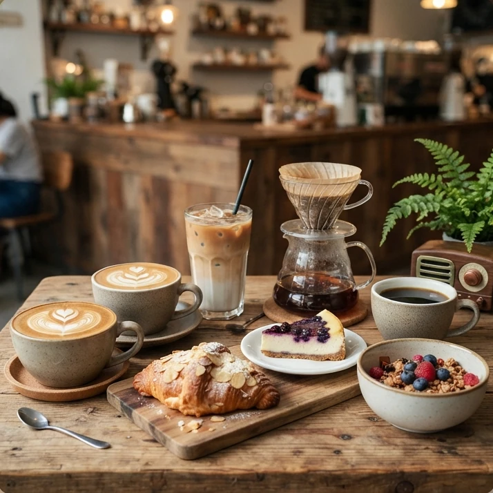

في راديو، يبدأ كل فنجان بأغنيةٍ قديمة — أجواءٌ شرقية، أصواتٌ لا تشيخ، ونهارٌ يمشي على مهله.

اسحب برفق… ودع النكهة تختار لحظتك
كل فنجان هنا يُحضَّر لحظة تطلبه… فاختر ما يشبه مزاجك اليوم
لا يشمل أجرة التوصيل — يحدّدها المحل حسب منطقتك.